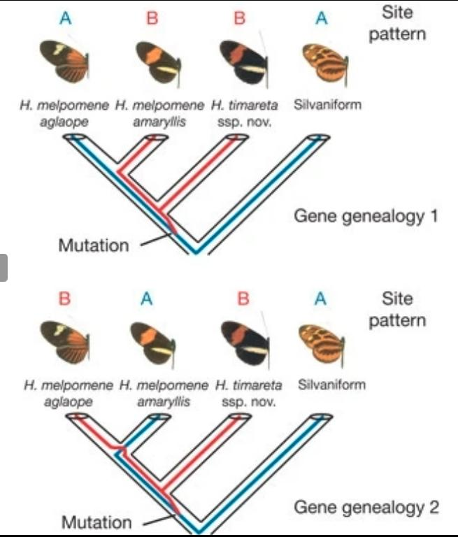

vcftools --gzvcf Flowers_et_al_2019.SNPs.vcf.gz --chr NW_008246512.1 --recode --recode-INFO-all --out subset_Flowers_2019
mv subset_Flowers_2019.recode.vcf subset_Flowers_2019.vcf
bgzip subset_Flowers_2019.vcf
tabix -p vcf subset_Flowers_2019.vcf.gzPhysalia course, Day 2: Workshop on Population Structure and Admixture
The structure and introgression history of the date palm
This workshop will mostly deal with a single dataset, that you will find as a VCF file. Today, our goal consists in reproducing most of the analyses shown in the paper provided in the Reference folder(Flowers et al. 2019). As usual for all our workshops, because we want things to proceed relatively quickly, we will only look at a subset of the published data (available at https://datadryad.org/stash/dataset/doi:10.5061/dryad.tm40gd8). The dataset you have was obtained like this (do NOT execute, this is just for information):
You can read the paper to get an idea why we chose this scaffold in particular…
We will examine how populations of domesticated date palm (Phoenix dactylifera) are structured, and whether they may have received some contribution from related species (in particular the Cretan palm Phoenix theophrasti).
Setting up the session
When working with R on the cluster (and at home), you will have to specify the working directory, as follows (in R shell):
WD="/home/yannbourgeois/Desktop/CurrentWORK/" ###edit this so it directs to your working directory, where your files and folders are.
setwd(WD)To find the PATH to your current directory, you can type (in the shell):
pwdTo make our lives easier, we set up different conda (https://docs.conda.io/en/latest/) environments in which some programs have been installed. We will have to activate these environments before calling these programs. The general command for this is:
conda activate Workshop_TL_YB ###to activate the environment named Workshop_TL_YB
conda deactivate ###to exit the environment. We can load another one after that if needed.We will start by creating in our own workspace a folder named “Dataset” in which we will create symbolic links to the actual data files found in the “Shared/” folder. If you are not familiar with symlinks, it simply means that we create redirections to the actual files without copying them. This will avoid copying the files multiple times.
mkdir Dataset
cd Dataset
ln -s /home/ubuntu/Share/Day2_popstructure/* .
ls -s ### See how all is blue and light?At last, if you need or want to download data on your own machine, the basic scp command should look like this (replace by actual paths to the directories of interest):
##Assuming your key is called popgen.pem
scp -i popgen.pem ubuntu@34.221.126.95:/path/on/the/server/ /path/on/your/computer/Hopefully these few explanations should help you get through the workshop and make everything work. Use Slack and Zoom if needed!
Thinning the dataset to avoid Linkage Disequilibrium.
Ideally, we want to avoid including markers which are in close linkage with each other. Using the Linux command line (shell), we can run vcftools to select only one SNP every 1000, 10,000, or 100,000 positions. But how to decide?
Typically we would have to examine LD-decay: the physical distance beyond which two SNPs would not be in strong linkage between each other. You can estimate LD between pairs of markers using vcftools (Danecek et al. 2011) or PLINK (Purcell et al. 2007). It would output pairwise LD between all markers found in windows of a size you can define. You would then need to obtain the average LD across bins of distance and plot the results.
We can also be lazy and avoid reinventing the wheel. We are going to use PopLDDecay, which takes a VCF and outputs the LD decay directly. To decide on a threshold, this is the easiest way. The software is already installed on your session. You can find PopLDDecay at https://github.com/BGI-shenzhen/PopLDdecay if you wish to install it on your own machine.
The command is as follows (shell script). We will look only at P. dactylifera individuals, which make most of the dataset:
OUTPUT_PATH=/home/ubuntu/Results/ ###Edit this to point toward where you would like the results to be stored. You can of course directly replace by "Results/" directly in the code. This is mostly to give you an idea of what can be done with variable declation.
export PATH="$PATH:/home/ubuntu/Share/software/VCF2Dis-1.53/bin"
export PATH="$PATH:/home/ubuntu/Share/software/PopLDdecay-3.43/bin"
export PATH="$PATH:/home/ubuntu/Share/software/Dsuite/Build"
export PATH="$PATH:/home/ubuntu/Share/software/Dsuite/utils/"
mkdir ${OUTPUT_PATH} ###To create the folder. You can of course simply type mkdir Results/ from where you are.
cd Dataset ##To access the Data folder. You can of course execute the command from outside the folder if you specify the path towards the VCF and the file with the list of populations.
PopLDdecay -InVCF subset_Flowers_2019.vcf.gz -SubPop list_dacty.txt -MAF 0.05 -OutStat ${OUTPUT_PATH}/LD-decay_all.stat
cd ..Note the ‘export PATH’ commands. This is to ensure that the executables found at these paths are found automatically. We could make something more permanent but wanted to avoid messing with the local machine too much. Make sure to export the PATH again if you are disconnected and need to reuse these programs.
You can go and take a coffee, it might last two or three minutes.
Now, we can import the results in R.
library(data.table)
OUTPUT_PATH="./Results/" ###Change this depending on where you are (at home or on the cluster). This is an example of what you could do at the beginning of an R session: you can define all paths from the start and do not have to modify the rest of the code.
LD_decay=as.data.frame(fread(paste(OUTPUT_PATH,"LD-decay_all.stat.gz",sep = "")))
# pdf(file = "./Results/LD_decay_datepalm.pdf") #Uncomment in case you do not have R on your own machine. You can obtain a PDF and download it to visualize it.
plot(LD_decay$`#Dist`,LD_decay$`Mean_r^2`,xlab="Physical distance in bp",ylab=expression(r^2),xlim=c(0,30000),type="l")
# dev.off() #Uncomment in case you do not have R on your own machine. You can obtain a PDF and download it to visualize it.We can see that LD decays rather quickly with distance, dropping below 0.2 at a distance of ca 3000bp. A thinning threshold of 20,000bp would seem reasonable here.
Again, for the sake of speed, we only have a short scaffold. To retain enough markers to keep things interesting, we will only thin every 2000bp. Let’s use vcftools (bash script) to thin our dataset:
conda activate Workshop_TL_YB_Calling
cd Dataset
vcftools --gzvcf subset_Flowers_2019.vcf.gz --thin 2000 --recode --recode-INFO-all --out thinned_subset_Flowers_2019
cd ..
conda deactivateHow many markers do you have left?
First description of the dataset: a Principal Component Analysis.
As mentioned during the lecture, PCA is a rather simple and efficient way to summarize variation between our genotypes. There are different ways to generate a PCA. We could do it entirely with R, which is popular among biologists and freely available (many of you probably already have it installed on your laptop). However, for large, whole genome datasets, this can become cumbersome.
Instead, we are going to use PLINK. We are not dealing with nice and neat chromosome names such as chr1, chr2…, so we specify –allow-extra-chr.
conda activate Workshop_TL_YB ###Activate the environment to use plink.
cd Dataset
plink --vcf thinned_subset_Flowers_2019.recode.vcf --double-id --pca --out ../Results/PCA_thinned --allow-extra-chr
cd ..
conda deactivateNow we are going to use R to visualize our results:
library(ggplot2)
library(RColorBrewer)
eigenval=read.table("Results/PCA_thinned.eigenval")
pca=read.table("Results/PCA_thinned.eigenvec")
theo=read.table("Dataset/list_theophrasti.txt")
dacty_NAfr=read.table("Dataset/list_dacty_NAfr.txt")
dacty_ME=read.table("Dataset/list_dacty_ME.txt")
reclinata=read.table("Dataset/list_reclinata.txt")
sylves=read.table("Dataset/list_sylvestris.txt")
canar=read.table("Dataset/list_canariensis.txt")
cols <- brewer.pal(n =6, name = "Dark2")
pca$Species="None"
pca$Species=ifelse(pca$V1%in%theo$V1,"P._theophrasti",pca$Species)
pca$Species=ifelse(pca$V1%in%dacty_NAfr$V1,"P._dactylifera_NAfr",pca$Species)
pca$Species=ifelse(pca$V1%in%dacty_ME$V1,"P._dactylifera_ME",pca$Species)
pca$Species=ifelse(pca$V1%in%reclinata$V1,"P._reclinata",pca$Species)
pca$Species=ifelse(pca$V1%in%sylves$V1,"P._sylvestris",pca$Species)
pca$Species=ifelse(pca$V1%in%canar$V1,"P._canariensis",pca$Species)
###Saving species information for later and creating the cluster file for TreeMix
write.table(pca[,c(1,23)],file="Dataset/Species_info.txt",col.names = T,row.names = F,sep = "\t",quote=F)
write.table(pca[,c(1,1,23)],file="Dataset/Species_info.clust",col.names = F,row.names = F,sep = "\t",quote=F)
# pdf(file = "./Results/PCA_results.pdf") #This is in case you do not have R on your own machine. You can obtain a PDF and download it to visualize it.
###PC1 and PC2
p <- ggplot(pca, aes(x=V3, y=V4, colour=Species))
p <- p + geom_point(size=4)
#p <- p + stat_ellipse(level = 0.95, size = 1)
p <- p + scale_color_manual(values = cols)
p <- p + geom_hline(yintercept = 0)
p <- p + geom_vline(xintercept = 0)
p <- p + theme_bw()
p+labs(y= paste("PC2",round(100*eigenval[2,1]/sum(eigenval[,1]),2),"% variance explained"),x = paste("PC1",round(100*eigenval[1,1]/sum(eigenval[,1]),2),"% variance explained"))+theme(text = element_text(size=10))
###PC3 and PC4
p <- ggplot(pca, aes(x=V5, y=V6, colour=Species))
p <- p + geom_point(size=4)
#p <- p + stat_ellipse(level = 0.95, size = 1)
p <- p + scale_color_manual(values = cols)
p <- p + geom_hline(yintercept = 0)
p <- p + geom_vline(xintercept = 0)
p <- p + theme_bw()
p+labs(y= paste("PC4",round(100*eigenval[4,1]/sum(eigenval[,1]),2),"% variance explained"),x = paste("PC3",round(100*eigenval[3,1]/sum(eigenval[,1]),2),"% variance explained"))+theme(text = element_text(size=10))
###PC5 and PC6
p <- ggplot(pca, aes(x=V7, y=V8, colour=Species))
p <- p + geom_point(size=4)
#p <- p + stat_ellipse(level = 0.95, size = 1)
p <- p + scale_color_manual(values = cols)
p <- p + geom_hline(yintercept = 0)
p <- p + geom_vline(xintercept = 0)
p <- p + theme_bw()
p+labs(y= paste("PC6",round(100*eigenval[6,1]/sum(eigenval[,1]),2),"% variance explained"),x = paste("PC5",round(100*eigenval[5,1]/sum(eigenval[,1]),2),"% variance explained"))+theme(text = element_text(size=10))
# dev.off()Admixture analysis: ADMIXTURE
Another classical analysis consists in running algorithms that will assign our individuals to a discrete number of genetic clusters. We are going to use ADMIXTURE (Alexander and Novembre 2009) here. We need to run the software for several values of K (the number of clusters). We also want to perform cross-validation for each value of K, to identify the K value which gives the most robust model. You will find below a script to convert the VCF into a format that can be read by ADMIXTURE, and a loop to run ADMIXTURE itself for K=1 to K=10. We use ten cross-validations.
conda activate Workshop_TL_YB_Calling ###Activate the environment to use vcftools.
cd Dataset
vcftools --vcf thinned_subset_Flowers_2019.recode.vcf --plink --out thinned_subset_Flowers_2019
conda deactivate ##Sorry, we tried to make everything work but ended up with a few environments ;-). Remember the Jack Sparrow's meme...
conda activate Workshop_TL_YB
plink --file thinned_subset_Flowers_2019 --make-bed --out thinned_subset_Flowers_2019
###Looping over increasing values of K
cd ..
cd Results
for K in {1..10}; \
do admixture --cv=10 ../Dataset/thinned_subset_Flowers_2019.bed $K | tee log${K}.out; done
grep -h CV log*.out | sed "s/CV error (K=//" | sed "s/): /\t/" | sort -k1,1n > cross-validation_error_rate.txt
cd ..
conda deactivateWhile ADMIXTURE runs, look at its output, in particular the FST matrix.
Now to visualize in R the result from the cross-validation procedure. Usually, the values of K that are reported correspond to the lowest cross-validation error rate.
crossval=read.table("Results/cross-validation_error_rate.txt")
# pdf(file = "./Results/cross_validation_result.pdf") # Uncomment to save the output as PDF. If you are working on your own machine, you can also directly visualize the results.
plot(crossval$V1,crossval$V2,xlab="K",ylab="Cross-validation error",type="l")
# dev.off()We should observe a clear drop from K=3, and values rise from K=8. Of course here we are not using a lot of markers. For whole genome data the curves are smoother.
Let’s produce a Structure-like barplot in R. The script is a bit complex, and requires ggplot2 as well as tidyr and dplyr.
library(ggplot2)
library(dplyr)
library(tidyr)
species_info=read.table("Dataset/Species_info.txt",sep="\t",h=T)
for (K in 1:10){
q_matrix=read.table(paste("Results/thinned_subset_Flowers_2019.",K,".Q",sep=""))
colnames(q_matrix) <- paste0("Cluster", 1:K)
q_matrix$Individual <- species_info$V1
q_matrix$Species <- species_info$Species
# Reshape the data to a long format for ggplot2
q_long <- q_matrix %>%
pivot_longer(cols = starts_with("Cluster"), names_to = "Cluster", values_to = "Proportion") %>%
group_by(Species, Individual) %>%
arrange(desc(Proportion), .by_group = TRUE) %>%
ungroup()
# Order the individuals within each species by their main admixture proportion
q_long <- q_long %>%
mutate(Individual = factor(Individual, levels = unique(Individual)))
# Create a ggplot for this value of K
p <- ggplot(q_long, aes(x = Individual, y = Proportion, fill = Cluster)) +
geom_bar(stat = "identity", position = "stack") +
#facet_wrap(~ Species, nrow = 1) + ##Uncomment this if you want to obtain one window per species.
theme_minimal() +
theme(axis.text.x = element_text(angle = 90, hjust = 1, size = 8)) +
labs(title = paste("Admixture Proportion for K =", K),
x = "Individual",
y = "Admixture Proportion",
fill = "Cluster")
assign(paste0("barplotK", K), p)
}If all works well, you should be able to obtain the barplots by typing (here for K=3). Since we cannot directly see the result on the Virtual Machine, we need to save the figure as a PDF. You can then download it on your own machine.
pdf(file = "./Results/K3_ADMIXTURE.pdf", # The directory you want to save the file in
width = 10, # The width of the plot in inches
height = 4) # The height of the plot in inches
barplotK3
dev.off()
###You can also look at other values of K
barplotK2
barplotK3
barplotK4
barplotK5K=3 is the value that should give you the clearest result regarding our question about possible interspecific introgression (Flowers et al. 2019). Higher K values suggest more structure within P. dactylifera. What do you notice?
Tree of genetic distances.
Another way to describe our dataset consists in producing a tree of genetic distances between all individuals. The metric (p-distance) is rather simple: we estimate the proportion of sites that are different between all pairs of individuals, and use the resulting distance matrix to produce a tree.
A fast software that can be used for this task is VCF2DIS: https://github.com/BGI-shenzhen/VCF2Dis
We can obtain support values for our trees by sampling, for example, 25% of sites with replacement.
cd Dataset
NN=10
if [ "$#" -eq 1 ]; then
NN=$1
fi
for X in $(seq 1 $NN)
do
VCF2Dis_single -InPut thinned_subset_Flowers_2019.recode.vcf -OutPut ../Results/thinned_subset_Flowers_2019_tree_${X} -Rand 0.25
done
cd ..We should run 100 bootstraps, but you may have noticed that things are already running a bit slow. A proper cluster with, say, a SLURM scheduler, would probably be required for whole genome data.
We do not have a VCF with invariant sites here. Otherwise, we could also have extracted alignments and used a phylogenetic inference program such as RAxML or IQTree to produce a phylogeny. This is mostly useful if we are interested in the branch lengths and want to fit more sophisticated models of sequence evolution, or if we want to contrast gene trees and species trees. To describe relatedness, the approach above should be sufficient for most cases dealing with intra-specific variation (or close relatives).
Here again, we use R to visualize the results:
library(ape)
# List of tree file names
tree_files <- paste0("Results/thinned_subset_Flowers_2019_tree_", 1:10, "_2.nwk")
# Read each tree and store in a list
trees <- lapply(tree_files, read.tree)
# Combine into a multiPhylo object
multi_tree <- do.call(c, trees)
# Generate a majority-rule consensus tree
consensus_tree <- consensus(multi_tree, p = 0.5) # p = 0.5 for majority rule
outgroup <- "Reclinata_DP18"
# Reroot the tree with the specified outgroup
rerooted_tree <- root(consensus_tree, outgroup = outgroup, resolve.root = TRUE)
# Generate bootstrap support (if you have a corresponding alignment or phyDat)
# Assuming 'consensus_tree' is now a representative tree structure to add bootstraps:
bootstrap_values <- prop.clades(rerooted_tree, multi_tree)
rerooted_tree$node.label <- bootstrap_values * 10
plot(rerooted_tree, main = "Bootstrapped Consensus Tree", cex = 0.6)
# Plot the consensus tree with bootstrap values
# pdf(file = "./Results/Distance_tree.pdf") #
plot(rerooted_tree, main = "Bootstrapped Consensus Tree", cex = 0.6)
nodelabels(rerooted_tree$node.label, frame = "none", adj = c(1.1, -0.4), cex = 0.5)
# dev.off()Why is this tree interesting? Note that the sister species of P. dactylifera should be P. sylvestris.
Reticulated evolution: TreeMix.
We will now test for introgression and reticulated evolution using TreeMix. The first thing to do here consists in generating the input file. The format is not straightforward to obtain, fortunately there are conversion tools available that we can use (the Python package PPP here). We will use here the VCF with all sites, and use block-bootstrapping to obtain uncertainties.
conda activate PPP
cd Dataset
ls list*txt | grep -v list_dacty.txt |sed "s:.txt::" | sed "s:list_::" > 6Pops.txt
##Below is a Python function from the PPP suite, which will create the model we need. It simply assigns samples to populations.
model_creator.py --model 6Pops --model-pop-file 6Pops 6Pops.txt \
--pop-ind-file canariensis list_canariensis.txt \
--pop-ind-file dacty_ME list_dacty_ME.txt \
--pop-ind-file dacty_NAfr list_dacty_NAfr.txt \
--pop-ind-file reclinata list_reclinata.txt \
--pop-ind-file sylvestris list_sylvestris.txt \
--pop-ind-file theophrasti list_theophrasti.txt
mv out.model 6Pops.model
###Now for the conversion proper (still a Python script from PPP)
vcf_to_treemix.py --vcf subset_Flowers_2019.vcf.gz --model-file 6Pops.model --modelname 6Pops --out subset_Flowers_2019_treemix
###It might display an error on the cluster, this is due to bgzip not working. You can still zip the output as follows:
gzip subset_Flowers_2019_treemix
conda deactivate
conda activate Workshop_TL_YB_admixture ##Treemix is there.
for m in {0..5}; do
treemix -i subset_Flowers_2019_treemix.gz -o ../Results/subset_Flowers_2019_treemix_mig_${m} -noss -root reclinata -global -m ${m} -k 500
done
conda deactivate
cd ..
##For next step:
cp -r /home/ubuntu/Share/Day2_popstructure/treemix-1.13/ Dataset/We can now plot our results in R for an increasing number of introgression events. You can copy the treemix-1.13 folder from /Shared/ to your current folder (see last command above). Again, use the pdf() command if you are on the cluster.
source("./Dataset/treemix-1.13/src/plotting_funcs.R")
plot_tree("Results/subset_Flowers_2019_treemix_mig_0")
plot_tree("Results/subset_Flowers_2019_treemix_mig_1")
plot_tree("Results/subset_Flowers_2019_treemix_mig_2")
plot_tree("Results/subset_Flowers_2019_treemix_mig_3")
plot_tree("Results/subset_Flowers_2019_treemix_mig_4")
plot_tree("Results/subset_Flowers_2019_treemix_mig_5")To determine the optimal number of edges and robustness of our findings, we can run TreeMix several times on bootstrapped datasets:
conda activate Workshop_TL_YB_admixture ##Treemix is there.
mkdir Results/Bootstraps_TreeMix
cd Results/Bootstraps_TreeMix
for m in {1..5}; do
for i in {1..10}; do
s=$RANDOM
treemix -i ../../Dataset/subset_Flowers_2019_treemix.gz -bootstrap -o subset_Flowers_2019_treemix.${i}.${m} -noss -global -m ${m} -k 500 -seed ${s}
done
done
cd ..
tar -zcvf treemix.tar.gz Bootstraps_TreeMix ###Use the tar file for the online version of optM
cd ..
conda deactivateUsing the Evanno method, we can determine the most likely number of migration edges to add to our graph with the library OptM in R. To put it simply, we try to identify the number of migration edges above which we do not add much explanatory power. This threshold is identified by looking at the ‘acceleration’ of likelihoods (the second-order rate of change, or the change in the slope) over increasing values of K.
library(OptM) ###to install on your own machine
result_opt=optM(folder = "./Results/Bootstraps_TreeMix/")
plot_optM(result_opt)Note that you can also run this diagnostic on a shiny app online: https://rfitak.shinyapps.io/OptM/
What seems to be the most likely scenario here?
Introgression statistics.
You probably have heard of the ABBA-BABA statistics already. Below is the classical figure used to explain it:

We are going to use Dsuite, which can efficiently deal with VCF files. We only need to provide it with a topology. Fortunately, we just generated one with TreeMix!
cd Results
conda activate Workshop_TL_YB_Misc
zcat subset_Flowers_2019_treemix_mig_0.treeout.gz | sed "s:reclinata:Outgroup:" | head -n1 > tree_for_Dsuite.nwk
##done before, leave it as it is.sed "s:P._reclinata:Outgroup:" Species_info.txt | grep -v V1 | sed "s:P._::"> SETS.txt
Dsuite Dtrios -t tree_for_Dsuite.nwk -o subset_Flowers_2019_Dtrios.txt ../Dataset/subset_Flowers_2019.vcf.gz ../Dataset/SETS.txt
Dsuite Fbranch tree_for_Dsuite.nwk subset_Flowers_2019_Dtrios.txt_tree.txt > subset_Flowers_2019_Fbranch.txt
dtools.py subset_Flowers_2019_Fbranch.txt tree_for_Dsuite.nwk
Dsuite Dinvestigate -w 200,100 ../Dataset/subset_Flowers_2019.vcf.gz ../Dataset/SETS.txt ../Dataset/Trios_to_investigate.txt
cd ..Look at the fbranch.png file. What do you notice? What could be an explanation based on the Admixture plots?
Some information about the summary statistics implemented in Dsuite:
“While the fd statistic may be useful to localise genomic regions introgressed between P2 and P3, it is not meaningful in cases of excess sharing of alleles between P1 and P3 and can take arbitrarily large negative values in those cases (fd <−1).”
“The distance fraction df shares the advantages of fdM of being symmetric and bounded on the interval [−1,1], while it may provide a more accurate estimate of the amount of introgression, being less sensitive to the timing of gene flow (Pfeifer & Kapan, 2019).”
Fbranch=read.table("Results/subset_Flowers_2019_Fbranch.txt",h=T)
table=read.table("Results/subset_Flowers_2019_Dtrios.txt_tree.txt",h=T)
introgressed_scan_theophrasti=read.table("Results/dacty_ME_dacty_NAfr_theophrasti_localFstats__200_100.txt",h=T)
introgressed_scan_sylvestris=read.table("Results/dacty_NAfr_dacty_ME_sylvestris_localFstats__200_100.txt",h=T)
plot(introgressed_scan_theophrasti$windowStart,introgressed_scan_theophrasti$f_dM,ylim=c(0,1),type="l",xlab="Position",ylab="f-d statistics")Examining differentiation and introgression along the genome.
VCFTools can be used for summary statistics that do not require invariant sites, such as FST and Tajima’s D. We will see an alternative on Thursday, which uses genotype likelihoods.
conda activate Workshop_TL_YB_Calling
cd Dataset
vcftools --gzvcf subset_Flowers_2019.vcf.gz --weir-fst-pop list_dacty_NAfr.txt --weir-fst-pop list_theophrasti.txt --fst-window-size 5000 --fst-window-step 5000 --out ../Results/NAfr_theo_FST
vcftools --gzvcf subset_Flowers_2019.vcf.gz --weir-fst-pop list_dacty_ME.txt --weir-fst-pop list_theophrasti.txt --fst-window-size 5000 --fst-window-step 5000 --out ../Results/ME_theo_FST
vcftools --gzvcf subset_Flowers_2019.vcf.gz --weir-fst-pop list_dacty_NAfr.txt --weir-fst-pop list_dacty_ME.txt --fst-window-size 5000 --fst-window-step 5000 --out ../Results/NAfr_ME_FST
vcftools --gzvcf subset_Flowers_2019.vcf.gz --keep list_dacty_NAfr.txt --TajimaD 5000 --out ../Results/dacty_NAfr
vcftools --gzvcf subset_Flowers_2019.vcf.gz --keep list_dacty_ME.txt --TajimaD 5000 --out ../Results/dacty_ME
cd ..As usual, we can plot the results (we are autonomous enough at that point, I let you decide whether you need a PDF output or just output to the screen).
FST_NAfr_theo=read.table("Results/NAfr_theo_FST.windowed.weir.fst",h=T)
FST_ME_theo=read.table("Results/ME_theo_FST.windowed.weir.fst",h=T)
FST_NAfr_ME=read.table("Results/NAfr_ME_FST.windowed.weir.fst",h=T)
plot(FST_ME_theo$BIN_START,FST_ME_theo$WEIGHTED_FST,xlab="Position",ylab="Weighted Fst",col="red",type="l")
points(FST_NAfr_theo$BIN_START,FST_NAfr_theo$WEIGHTED_FST,xlab="Position",type="l")
points(FST_NAfr_ME$BIN_START,FST_NAfr_ME$WEIGHTED_FST,xlab="Position",col="blue",type="l")
Taj_NAfr=read.table("Results/dacty_NAfr.Tajima.D",h=T)
Taj_ME=read.table("Results/dacty_ME.Tajima.D",h=T)
plot(Taj_NAfr$BIN_START,Taj_NAfr$TajimaD,xlab="Position",ylab="Tajima's D",col="black",type="l")
points(Taj_ME$BIN_START,Taj_ME$TajimaD,xlab="Position",col="red",type="l")Back to LD decay: comparing Northern-African and Middle-East populations.
We may expect stronger LD in admixed populations due to correlations between alleles inherited from the same parental population. Let’s test this by comparing LD-decay between the North-African and Middle-Eastern palms:
cd Dataset
PopLDdecay -InVCF subset_Flowers_2019.vcf.gz -SubPop list_dacty_NAfr.txt -MAF 0.05 -OutStat ../Results/LD-decay_NAfr.stat
PopLDdecay -InVCF subset_Flowers_2019.vcf.gz -SubPop list_dacty_ME.txt -MAF 0.05 -OutStat ../Results/LD-decay_ME.stat
cd ..Again, we import the results in R:
library(data.table)
LD_decay_ME=as.data.frame(fread("Results/LD-decay_ME.stat.gz"))
LD_decay_NAfr=as.data.frame(fread("Results/LD-decay_NAfr.stat.gz"))
plot(LD_decay_ME$`#Dist`,LD_decay_ME$`Mean_r^2`,xlab="Physical distance in bp",ylab=expression(r^2),xlim=c(0,30000),type="l")
points(LD_decay_NAfr$`#Dist`,LD_decay_NAfr$`Mean_r^2`,col="red",type="l")References
Alexander, David H, and John Novembre. 2009. “Fast Model-Based Estimation of Ancestry in Unrelated Individuals.” Genome Research, no. 19: 1655–64. https://doi.org/10.1101/gr.094052.109.vidual.
Danecek, Petr, Adam Auton, Goncalo Abecasis, Cornelis A. Albers, Eric Banks, Mark A. DePristo, Robert E. Handsaker, et al. 2011. “The Variant Call Format and VCFtools.” Bioinformatics 27 (15): 2156–58. https://doi.org/10.1093/bioinformatics/btr330.
Flowers, Jonathan M., Khaled M. Hazzouri, Muriel Gros-Balthazard, Ziyi Mo, Konstantina Koutroumpa, Andreas Perrakis, Sylvie Ferrand, et al. 2019. “Cross-Species Hybridization and the Origin of North African Date Palms.” Proceedings of the National Academy of Sciences of the United States of America 116 (5): 1651–58. https://doi.org/10.1073/pnas.1817453116.
Purcell, Shaun, Benjamin Neale, Kathe Todd-Brown, Lori Thomas, Manuel A. R. Ferreira, David Bender, Julian Maller, et al. 2007. “PLINK: A Tool Set for Whole-Genome Association and Population-Based Linkage Analyses.” The American Journal of Human Genetics 81 (3): 559–75. https://doi.org/10.1086/519795.